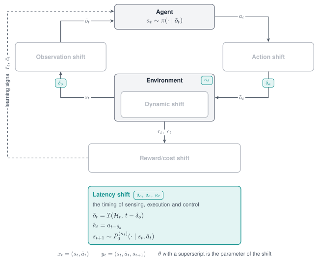
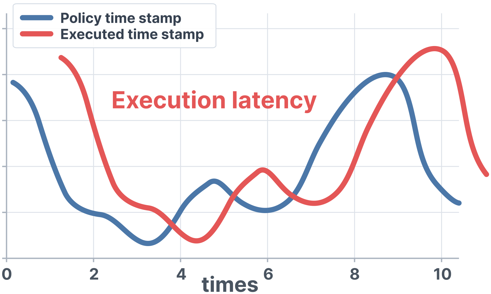

Latency shift¶
A Latency shift changes timing: when an action takes effect, when an observation arrives, how long a control period lasts, and when a reward is paid. A delay changes the loop that the policy closes around the plant, which noise on an observation or an action cannot imitate.

The Latency shift acts on timing: the delay of the observation, the delay of the action and the control period.

Execution latency separates the time a command is issued from the time it takes effect.
Properties¶
| Aspect | Latency shift |
|---|---|
| Perturbs | The timing of actions, observations, the control period and the reward |
| Target in code | latency |
| Modes | Stochastic, Parametric, Non-stationary, Composition |
| Units | Control steps for fixed, buffer and delay; seconds for substep and interp |
| Acts on a frozen policy | fixed, buffer, substep and interp; delay is applied during training |
| Backends | Any; substep needs a MuJoCo task that exposes frame_skip or n_substeps |
Supported modes¶
| Mode | Mode name in code | What it does |
|---|---|---|
| Parametric | fixed |
Applies every action a constant number of control steps late |
| Parametric | delay |
Pays the reward late; observation and action stay on time |
| Stochastic | buffer |
Applies every action late by a number of steps drawn per episode or per step |
| Stochastic | substep |
Holds every action for a control period of random length |
| Stochastic | interp |
Returns the observation as it was some seconds ago, by interpolation of the observation history |
| Non-stationary | schedule on substep and interp |
Varies the excess of the period, or the delay, within the episode |
| Composition | Several shifts in one list | Combines action delay, observation delay and a variable period |
The models behind substep and interp come from two sim-to-real studies: the randomized
control period of Peng et al. (Sim-to-Real Transfer of Robotic Control with Dynamics
Randomization, 2018) and the interpolated observation history of Tan et al. (Sim-to-Real:
Learning Agile Locomotion For Quadruped Robots, 2018). The Adversarial mode is not defined for
this shift.
Parameters¶
| Mode name | Parameter | Type | Default | Meaning |
|---|---|---|---|---|
fixed |
steps |
int | required | Delay of the action in control steps; 0 is the identity |
buffer |
low |
int | 0 |
Smallest action delay |
high |
int | 1 |
Largest action delay, inclusive | |
resample |
str | unset | "step" draws a new delay at every step instead of once per episode |
|
substep |
lambda_low |
float | 125.0 |
Lower bound of the rate of the random excess, per second |
lambda_high |
float | 1000.0 |
Upper bound of that rate, per second | |
dt0 |
float | The nominal control period | Base period in seconds | |
interp |
low |
float | 0.0 |
Smallest observation delay in seconds |
high |
float | 0.0 |
Largest observation delay in seconds | |
resample |
str | unset | "step" draws a new delay at every step instead of once per episode |
|
control_dt |
float | 1.0 |
Control period in seconds, used only if the task has no dt attribute |
|
delay |
steps |
int | 1 |
Reward delay in control steps; at least 1 |
release |
str | "interval" |
"interval" pays the accumulated reward every steps steps; "shift" pays each reward steps steps late |
With substep, the control period is the base period plus a random excess. The excess is drawn
at every step from an exponential distribution whose rate is drawn once per episode between
lambda_low and lambda_high; the mean excess is one over the rate, so the default bounds add
between 1 ms and 8 ms on average.
Declare the shift¶
import numpy as np
import robustrllib.gym as gym
from robustrllib import ShiftSpec, build_pipeline, make_robust
PARAMETRIC = {
"fixed": ShiftSpec("latency", "fixed", {"steps": 2}),
"delay": ShiftSpec("latency", "delay", {"steps": 16, "release": "interval"}),
}
STOCHASTIC = {
"buffer": ShiftSpec("latency", "buffer", {"low": 0, "high": 2}),
"substep": ShiftSpec("latency", "substep", {"lambda_low": 125.0, "lambda_high": 1000.0}),
"interp": ShiftSpec("latency", "interp", {"low": 0.004, "high": 0.008}),
}
Non-stationary, with an observation delay that grows within the episode:
NON_STATIONARY = ShiftSpec(
"latency", "interp", {"low": 0.008, "high": 0.008, "resample": "step"},
schedule={"type": "linear", "start": 0.0, "end": 1.0, "t0": 0, "t1": 500},
)
Composition of the three execution delays:
COMPOSITION = [
STOCHASTIC["substep"],
ShiftSpec("latency", "fixed", {"steps": 1}),
ShiftSpec("latency", "interp", {"low": 0.002, "high": 0.004}),
]
env = make_robust("Hopper-v5", shifts=COMPOSITION, seed=0)
Delayed actions¶
A recording wrapper between the task and the shift shows the action that reaches the simulator.
class Recorder(gym.Wrapper):
def __init__(self, env):
super().__init__(env)
self.applied = []
def step(self, action):
self.applied.append(float(np.asarray(action)[0]))
return self.env.step(action)
def applied_actions(spec, steps=6, seed=0):
recorder = Recorder(make_robust("Hopper-v5"))
env = build_pipeline(recorder, [spec], seed=seed)
env.reset(seed=seed)
for t in range(steps):
env.step(np.full(3, 0.1 * (t + 1))) # issue 0.1, 0.2, 0.3, ...
env.close()
return np.round(recorder.applied, 1).tolist()
print(applied_actions(ShiftSpec("latency", "fixed", {"steps": 0})))
print(applied_actions(ShiftSpec("latency", "fixed", {"steps": 2})))
[0.1, 0.2, 0.3, 0.4, 0.5, 0.6]
[0.1, 0.1, 0.1, 0.2, 0.3, 0.4]
During the first steps the wrapper applies the first action of the episode and not a zero action, because a zero command is a real torque.
Variable control period¶
def simulated_time(shifts, steps=100):
env = make_robust("Hopper-v5", shifts=shifts, seed=0, terminate_when_unhealthy=False)
env.reset(seed=0)
for _ in range(steps):
env.step(np.zeros(3))
elapsed, frame_skip = env.unwrapped.data.time, env.unwrapped.frame_skip
env.close()
return round(float(elapsed), 3), frame_skip
print(simulated_time([]))
print(simulated_time([STOCHASTIC["substep"]]))
(0.8, 4)
(1.414, 4)
One hundred nominal steps cover 0.8 s of simulated time; under the shift the same actions cover
more. The frame_skip of the task is back at its nominal value after every step.
Delayed reward¶
def rewards(shifts, steps=12):
env = make_robust("Hopper-v5", shifts=shifts, seed=0, terminate_when_unhealthy=False)
env.reset(seed=0)
out = [float(env.step(np.zeros(3))[1]) for _ in range(steps)]
env.close()
return np.round(out, 2).tolist()
print(rewards([]))
print(rewards([ShiftSpec("latency", "delay", {"steps": 4, "release": "interval"})]))
print(rewards([ShiftSpec("latency", "delay", {"steps": 4, "release": "shift"})]))
[1.0, 1.0, 1.0, 1.0, 1.0, 1.0, 1.0, 1.0, 1.0, 1.0, 1.0, 1.01]
[0.0, 0.0, 0.0, 3.99, 0.0, 0.0, 0.0, 3.98, 0.0, 0.0, 0.0, 4.0]
[0.0, 0.0, 0.0, 0.0, 1.0, 1.0, 1.0, 1.0, 1.0, 1.0, 1.0, 1.0]
Both release rules pay out everything that is still withheld when the episode terminates or is
truncated, so the undiscounted return of a complete episode is preserved. A trainer that
takes only an environment id receives the delay through the registered ids
HopperRewardDelay4-v5, HopperRewardDelay16-v5, HopperRewardDelay32-v5 and
HopperRewardDelay64-v5; a trainer that learns from a dataset receives it through the
reward_channel key of the experiment file.
randomization: []
extra_shifts:
- {target: latency, mode: delay, params: {steps: 16, release: interval}}
curriculum: {type: constant, end: 1.0}
Note
ShiftSpec("reward", "delay", ...) is the earlier spelling of the mode name delay and
builds the same wrapper.
Rules¶
- All five timing mode names are written on the target
latency. fixedis the mode name for a severity axis of an evaluation grid, because it adds no variance of its own.bufferneeds nothing from the simulator and runs on any backend.substepis written only for MuJoCo tasks; on other tasks it raisesNotImplementedErrorwhen the environment is built.interpdelays are given in seconds, which grades the delay below one control step.delayis applied during training, and the policy is evaluated on the nominal task.- A
fixedshift always carriessteps; a missing one raisesKeyErrorat the firstreset.